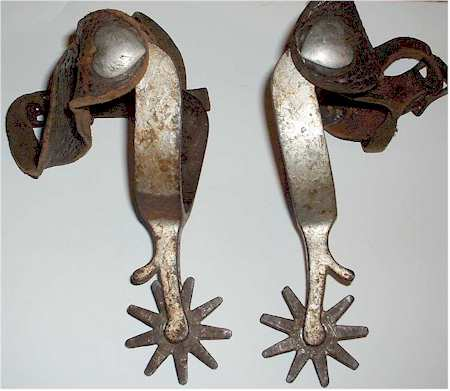
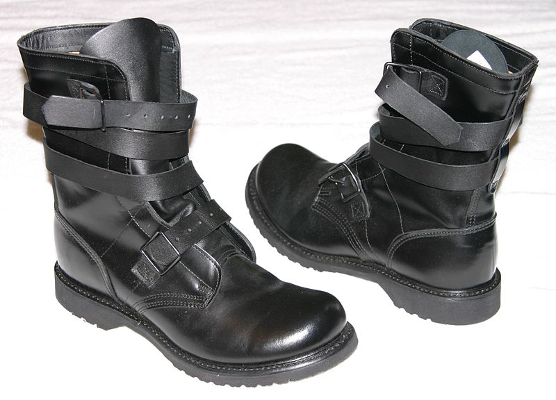
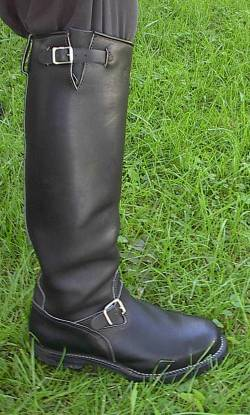

Western Spurs
A metal tool designed to be worn in pairs on the heels of riding boots for the purpose of directing a horse to move forward or laterally while riding. It is usually used to refine the riding aids (commands) and to back up the natural aids (the leg, seat, hands and voice). The spur is used in every equestrian discipline. There are rules in most equestrian organizations about spur design, use and penalties for using spurs in any manner that constitutes animal abuse.

Tanker Boots
Military boots closely associated with soldiers who serve on tanks and tracked vehicles in general. It is said the idea was borrowed from the French crewmen encountered during World War I when then-Captain George S. Patton, Jr. established the United States Tank Corps. Whereas regular combat boots are laced through metal eyelets in the leather upper, the tanker boots are fastened with leather straps which wrap around the upper and buckle near the top.

Engineer Boots
One of many styles of leather boots; this type of footwear is often worn by motorcycle riders. The boots are most often made of heavy weight black leather, have a rounded or squarish toe and range in height from short (10") to extra high (38"). The most typical height is between 10 and 18 inches.